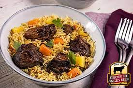

Beef Baryani

About Beef Biryani:
Beef Biryani is a rice-based dish made with spices, rice (usually basmati) and beef.
The name is derived from the Persian word berya(n), which means "fried" or "roasted".
Go Back